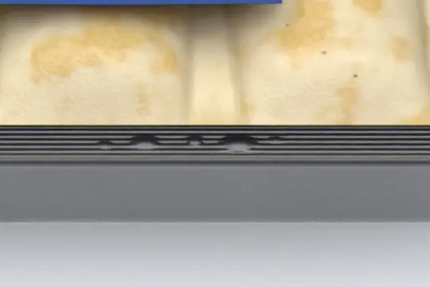
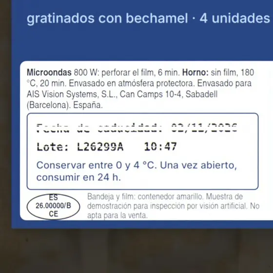

Las dos caras de cada envase, en tiempo real
AIS KARIKÓ detecta los defectos que pueden afectar a la seguridad o a la imagen del producto y comprueba que el lote y la caducidad estén presentes, legibles y correctos. El alcance de cada detección depende del producto, las muestras y la configuración.

Burbujas en el termosellado

Deformaciones

Cuerpos extraños

Códigos de barras

Verificación del marcaje

Inspección por las dos caras
El film y el fondo se inspeccionan a la vez. El sellado se verifica en todo el perímetro y se comprueba la referencia del film. Cada envase recibe su resultado, OK o NOK, y la pantalla lleva el recuento por tipo de defecto.